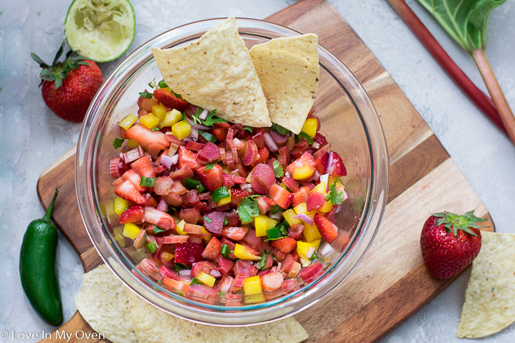

Rhubarb Salsa

Ingredients
- 2 cups rhubarb, diced small
- 1 cup chopped apple
- 3 green onions, chopped
- 2 limes, juiced
- 2 tablespoons honey
- 1 jalapeno pepper, seeded and chopped
Steps
- Bring a pot of water to a boil over medium heat, and stir in the rhubarb; simmer for 2 minutes to blanch. Drain in a colander set in the sink, and let cool.
- Stir together the cooled rhubarb, apple, green onions, lime juice, honey, and jalapeno pepper until thoroughly combined.